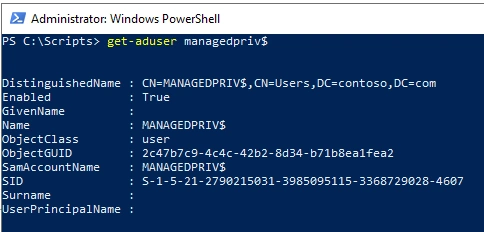

In the article SID filter as security boundary between domains? (Part 7) - Trust account attack - from trusting to trusted , by Jonas Bülow Knudsen, Martin Sohn Christensen, Tobias Thorbjørn Munch Torp, they describe how the security boundary of the forest can be breached by an admin in the trusted forest and I will explain how you can mitigate this problem.
NOT A SECURITY BOUNDARY
This topic has been discussed in the previous blog post Not A Security Boundary: Breaking Forest Trusts by Will Schroeder @harmj0y but I will focus on the scenario described in SID filter as security boundary between domains? (Part 7) - Trust account attack - from trusting to trusted.
When you set up a trust with another forest and specifically only want your users to access the resource in the other domain and not the other way around, that’s a one-way trust. You are the trusted part in this one-way trust and the other side is the trusting part. In most cases, you do not want to expose any directory information to the trusting side of the trust, since you do not trust or can control the security of that forest. The reason for the trust can be many but often organizations are in a situation where you need to migrate from one domain to another. Setting up this trust helps move resources to the destination domain. The old domain could contain a lot of legacy configurations and have a very poor security posture. Sometimes the old domain is managed by a third party that you do not trust. Microsoft has for a very long time presented the idea of the forest as the security boundary, but research by @Jonas_B_K, @martinsohndk, and Tobias Thorbjørn Munch Torp has shown that if you introduce a trust, even a one-way trust you have exposed yourself to the trusting part.
PROBLEM
{kind=link}
The problem is very well documented in SID filter as security boundary between domains? (Part 7) - Trust account attack - from trusting to trusted.
But in short, a domain administrator in the trusting domain (Domain B) have has access to the password for the trust account, since it’s the responsibility of the domain controller in the trusting domain (Domain B) to maintain it, it is this domain controller that shares its information with the other domain. The trust account is represented in the trusted domain (Domain A) as a user account in the Users container. Let’s say the trusting domain (Domain B) is called managedpriv.com then the user account would be called MANAGEDPRIV$.
Using this account an administrator in the trusting domain (Domain B) can access the trusted domain (Domain A) as a normal user. This account is a member of the Domain Users group, and this can’t be changed so hopefully, you have not added Domain Users to any other group, this is a very bad practice by the way.
The trust account is a critical system object and means that it’s managed by the system and very few changes can be made to it. You can see that it’s a critical object by checking the attribute isCriticalSystemObject = True. You can’t for example disable the account to prevent it from being used. You can’t remove the membership from Domain Users via modifying the attribute primaryGroupID.
SOLUTION
So, what can we do to make sure no authentication can be made with this account from anywhere? We can turn off authentication by using an Authentication Policy (Authentication Policies and Authentication Policy Silos | Microsoft Learn).
Authentication Policy is a feature introduced in Windows Server 2012 R2 and is intended to limit where privileged accounts can be used.
By creating an Authentication Policy in the trusted domain (Domain A) that requires the account to only allow authentication from machines in an empty/non-existing Authentication Policy Silo the domain controllers will prevent any authentication using the account.
This is how it works when no protection is added to the trust account.
In the trusting domain (Domain B) managedpriv.com we can as a domain admin extract the NTLM hash (rc4_hmac_nt) using mimikatz.
.\mimikatzs.exe "lsadump::trust /patch"
{kind=link}
Next, we use Rubeus with the NTLM hash in a Pass-the-hash attack on the same machine, towards the domain controller in the trusted domain (Domain A) contoso.com.
.\Rubeus.exe asktgt /user:<trust account> /domain:<trusted domain> /dc:<dc in trusted domain> /rc4:<NTLM hash> /ptt
Now we have access and can for example search the trusted domain (Domain A) contoso.com.
Get-aduser -ldapfilter “(servicePrincipalName=*)” -server <DC in trusted domain> | ft
How it looks like when the trust account is protected
First, we need to create an Authentication Policy and optionally an Authentication Policy Silo just to make sure the rule in the Authentication Policy points to something that exists.
The condition for the Authentication Policy dictates the following requirement for authentication:
The user must have a matching Authentication Silo claim with the host, called Block_INBOUND_TrustUsers_Logon_Silo.
It’s not required to enable support for Claims on the KDC (Domain Controller) or the Kerberos client since failure is the goal.
I have built a script for this Block-InboundOneWayTrustAccount.ps1 https://github.com/canix1/Block-InboundOneWayTrustAccount. The tool list all one-way inbound trusts and check if the trust account is protected with an Authentication Policy. If there are one-way inbound trusts and the trust accounts is are not protected, you will be asked for each account if you like to protect it.
.\Block-InboundOneWayTrustAccount.ps1 -protect
In this case, I want to protect the trust account for the one-way trust with managedpriv.com. As shown below I’m skipping the trust with the domain exchange.lab just for showing you can. I also have other trusts in this domain, but they are a child domain (Within Forest) and a bi-directional external trust, and these types of trusts are ignored by the script.
Now let’s make a new attempt from the trusting domain (Domain B) managedpriv.com to perform a Pass-the-hash attack.
The attack failed since the trust account is blocked from any authentication.
SUCCESS!
To revert the changes, we made we can run:
.\Block-InboundOneWayTrustAccount.ps1 -unprotect
SUMMARY
The forest is not the security boundary if you are using trusts unless additional hardening is made.
When you have a one-way trust, you are not protected from admins in the other forest from accessing your forest.
You must block authentication for the trust account to prevent admins in the trusting domain (Domain B) to abuse it.
Password rotation of the trust account, which happens every 30 days, is not affected since the domain controller in the trusting domain (Domain B) pushes this out to the PDC Emulator in the trusted domain (Domain A) using the function NetrServerPasswordSet2 over RPC.
References
SID filter as security boundary between domains? (Part 7) - Trust account attack - from trusting to trusted https://improsec.com/tech-blog/sid-filter-as-security-boundary-between-domains-part-7-trust-account-attack-from-trusting-to-trusted
Not A Security Boundary: Breaking Forest Trusts https://posts.specterops.io/not-a-security-boundary-breaking-forest-trusts-cd125829518d